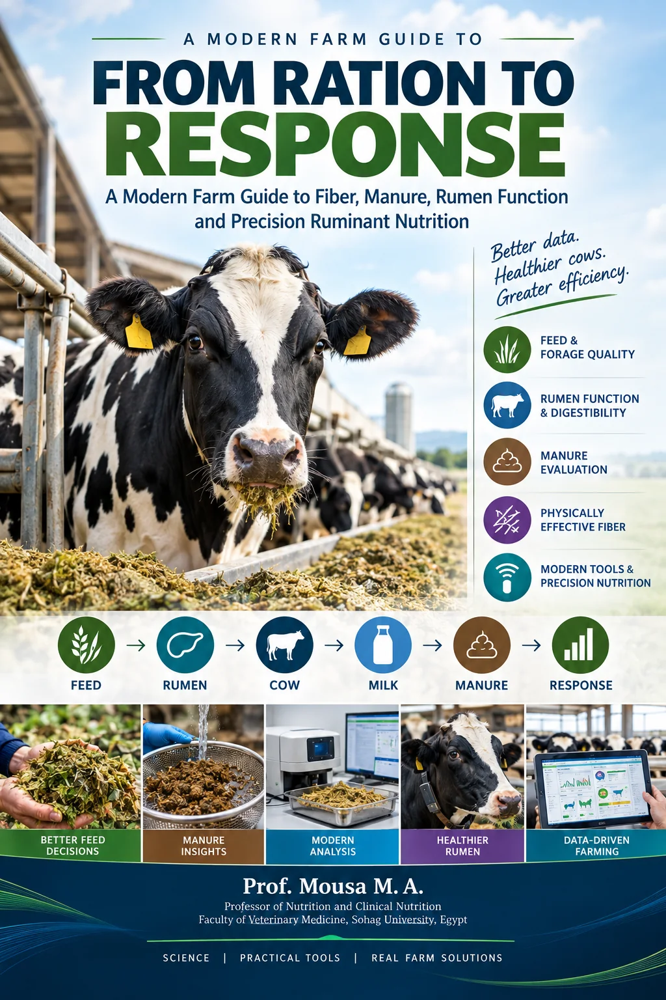
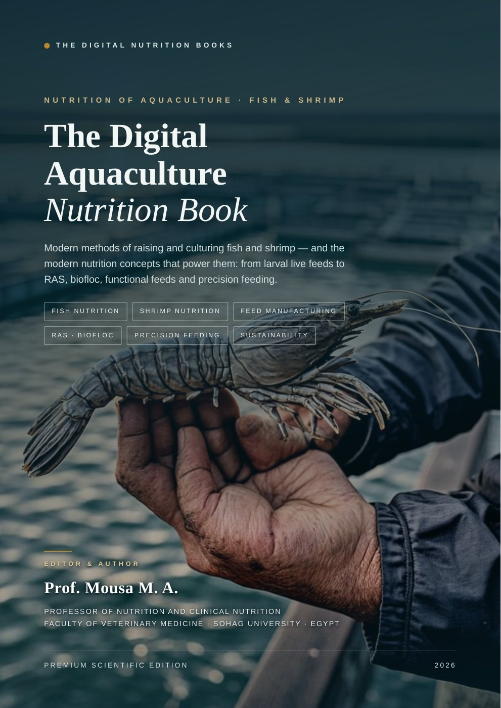
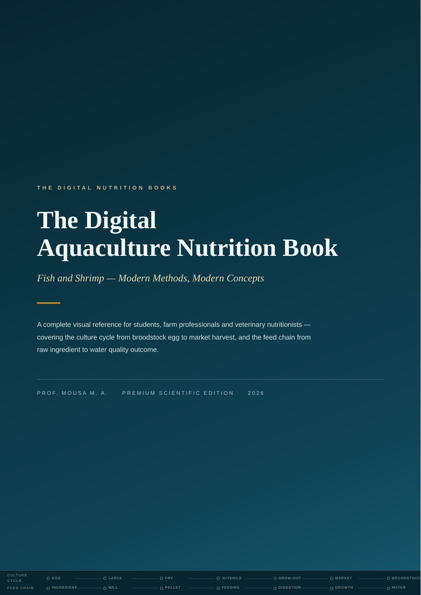
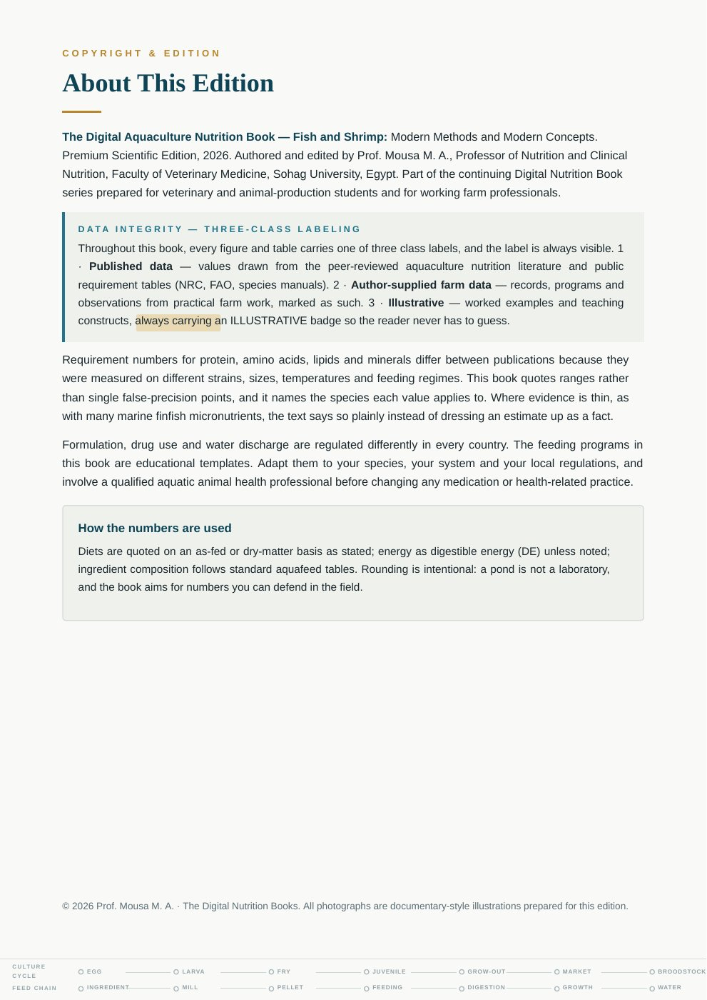
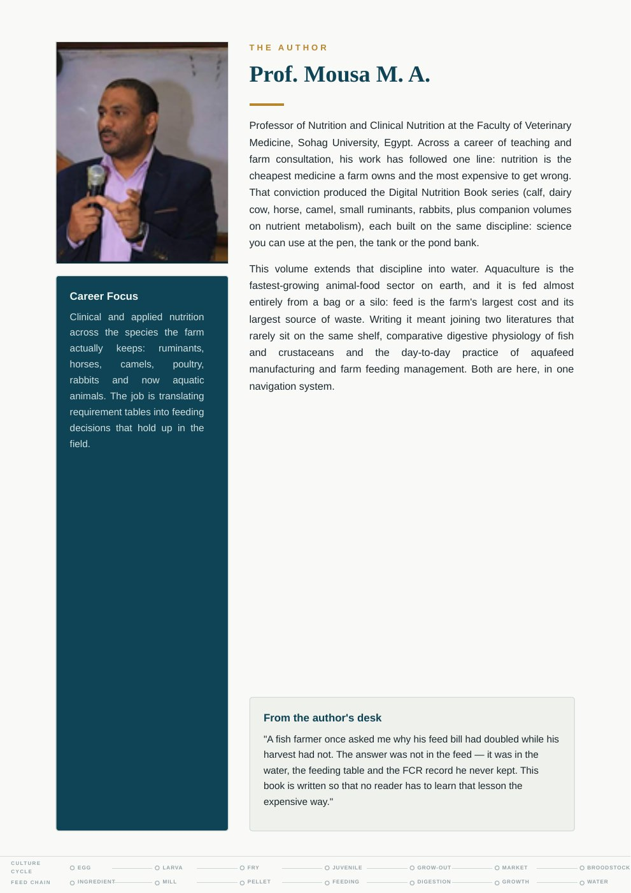
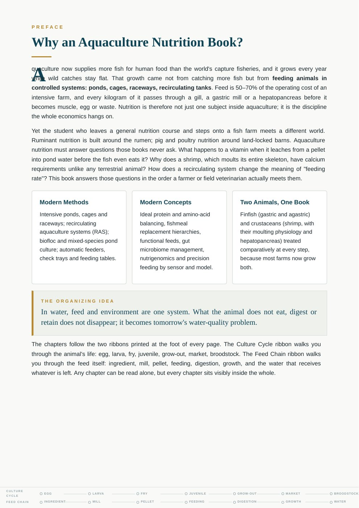
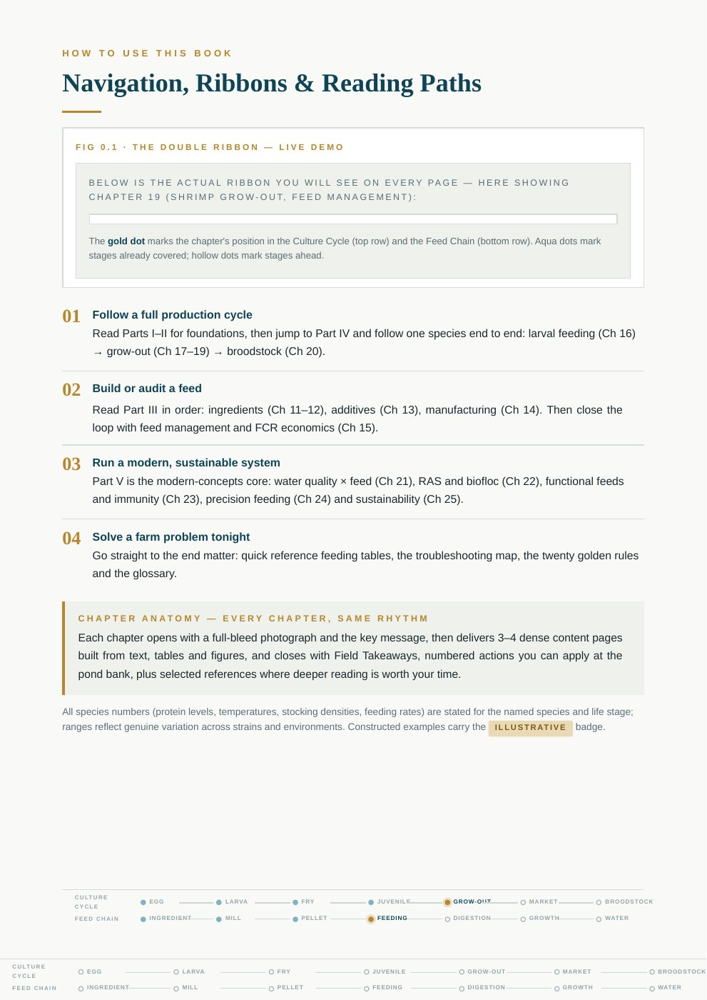
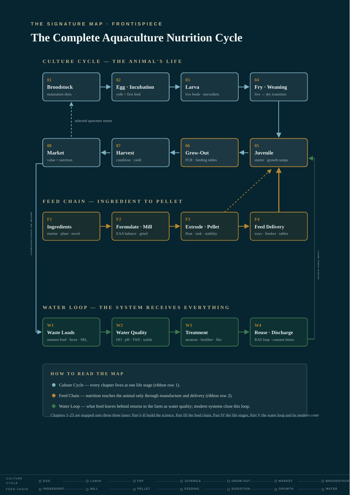
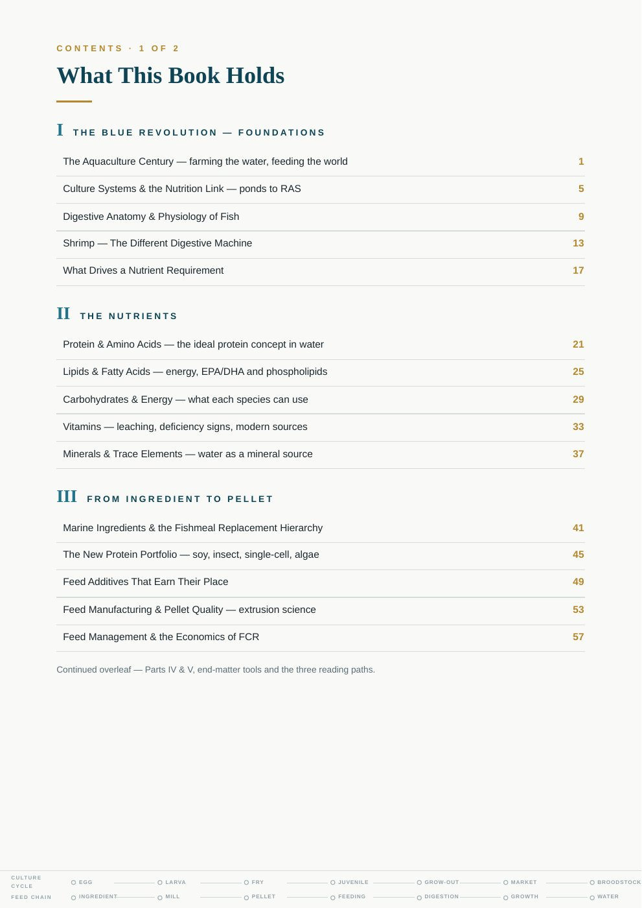
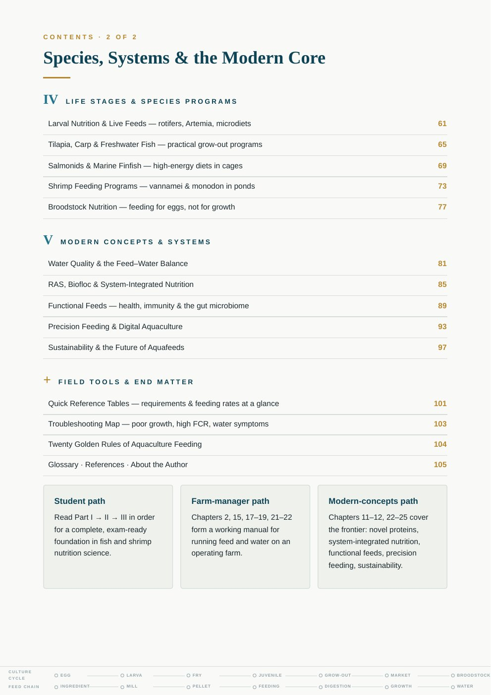

01
Feed & forage quality
Representative sampling, dry matter, forage testing, and what a feed report can support.
Connecting feed decisions with rumen function, cow health, milk, manure, and the evidence that helps farms improve.
Prof. Mousa M. A.
Professor of Nutrition and Clinical Nutrition
Faculty of Veterinary Medicine, Sohag University, Egypt
Professor of Nutrition and Clinical Nutrition
Faculty of Veterinary Medicine
Sohag University, Egypt
Ruminant nutrition is more than a ration on paper. It is the relationship between what is offered, what the animal consumes, and the response a farm can measure.
This site brings together the author's academic profile and the practical ideas behind From Ration to Response. Its focus is a clear, evidence-aware approach to connecting feed quality, rumen function, cow-side observations, milk performance, and farm records.

A practical handbook for connecting ration formulation with observable biological and production responses. Follow the path from feed analysis and TMR delivery through rumen function, manure, milk, and farm data.
Written for veterinarians, animal nutritionists, dairy consultants, farm managers, and advanced dairy farmers.
Download the book manuscript (Word)
Fish and Shrimp — Modern Methods, Modern Concepts. A visual reference covering aquaculture nutrition from culture systems and feed manufacturing to precision feeding and water quality.
The preview below shows the opening pages, including the title page, preface, navigation guide, cycle map, and contents.
Open any page image to view it at full size.








A nine-slide visual introduction to the nutrition pathway from feed and rumen function to manure, milk, and measurable response.
Use this short presentation to introduce the book’s central ideas to students, veterinarians, nutritionists, and farm teams.
Complete the form below. After submitting it, you’ll see the presentation download option.
Your registration is stored in Jotform to provide this download. Book updates are optional. The PowerPoint is hosted publicly, so its direct link can be shared.
Each topic is considered as part of the farm system, with measurement and context guiding the next decision.
Representative sampling, dry matter, forage testing, and what a feed report can support.
Particle distribution, chewing, sorting, and the limits of interpreting a single number.
Use cow and production observations as practical clues, then verify them in context.
Connect the formulated ration with dry matter, mixing, feed access, and refusals.
Build dependable records and use sensors as decision support for the farm team.
Simple logs and a monitoring rhythm for sampling, consistency checks, and response reviews.
A repeatable process helps distinguish a real change from noise and makes the result easier to learn from.